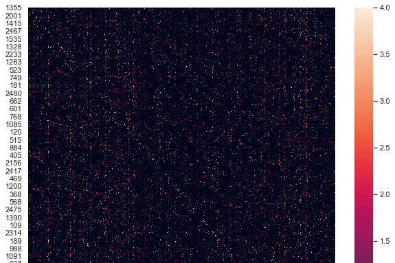

Computational Study of Transonic Buffet
Employ computational fluid dynamics in Fluent to
study transonic buffet for a NACA 0012 airfoil.
Analyze the impact of operating conditions and
modeling choices on buffet onset and limit cycle oscillations.
Process and interpret simulation results using Python
and MATLAB to gain insight into physical trends. This
research is conducted at Duke Univeristy as part of
the Aeroelasticity group.

Interpretable Machine Learning for Causal Inference
Apply and contribute to machine learning algorithms
in Python and R for causal inference.
Created and maintain a website to document
the algorithms and their usage and
contibuted an interactive online demo. This research
is conducted at Duke University as part of the
Almost Matching Exactly Lab (AME Lab).

Nanocomposite Fabrication for FDM Printing
Studied thermal conductivity in FDM printing and
fabricated polymer nanocomposites for improved mechanical
strength and thermal properties in 3D printed parts.
Conducted research under the direction of Dr. Miriam Rafailovich.
This research took place at Stony Brook University
as part of the Garcia Center for Polymers at Engineered Interfaces.